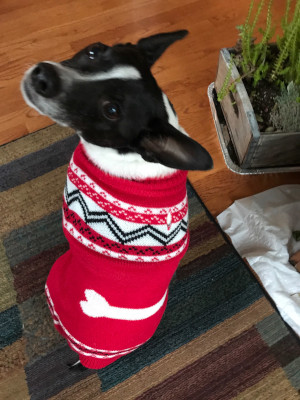
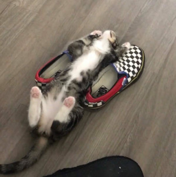

Ralfi is a Rat Terrier mix that we got from some random person from a gas station. They were talking on the phone about how their elderly friend had to move to a nursing home and couldn't take him with her and they needed to find a home for them. My neighbor offered to take him and gave him to us. His name was Ralph, but I changed it to Ralfi.
Socks is the kitten of a stray cat that abandoned her. She is a tabby cat. Her paws are white while the rest of her fur is dark, making her look like she's wearing socks. She also really likes shoes and shoelaces, so I names her Socks. I didn't know anything about cats when I rescued her and I thought she was a boy for a few weeks until a vert told me differently. She is very sickly and has had many health problems. She is 6 months old next week, but is the size of a 4 month old kitten.
